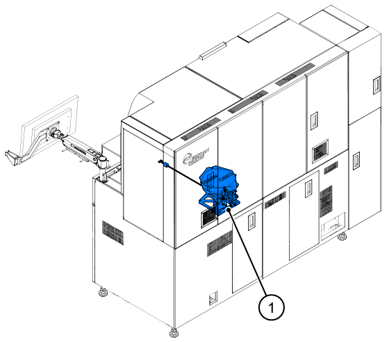
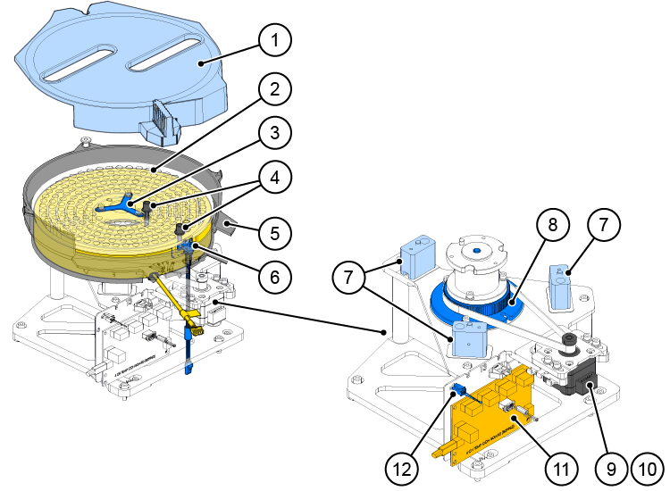
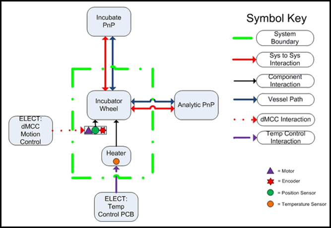

Operating Principles for the Incubator Wheel
This topic includes information about the theory of operation, or operating principles, for the incubator wheel module.
| Table of Contents |
|---|
| Function |
| Location |
| Operational Overview |
| Component Locations and Functions |
| Component and Interaction Block Diagram |
| Interacting and Intersecting Devices |
Function
The Incubator wheel functions as a storage for Reaction Vessels (RV's) during and after the Reaction Build phase as well as to incubate Vessels post substrate addition or the Enzyme Incubation Phase. To do this the Incubate Wheel needs to interface with two linear pick and place (PnP) gantries. The wheel has 6 rings which store RV's similar to each other. The concentric rings were utilized so that the heater plate below the wheel plate could have heated walls always in close proximity to 2 sides of the RV, much like the Access 2 instrument.
The incubator wheel can hold a capacity of 198 vessels (200 positions, with 2 occupied by the alignment pins).
Location
The incubator wheel is located at the rear of the instrument, slightly right of center. See the top view drawing of the instrument chassis and components below for location reference:

Operational Overview
- Incubator PnP places RV in incubator wheel.
- Incubator PnP removes RV and transfers to reagent shuttle (for 2-step or piggyback assays). Incubator PnP returns RV to incubator wheel after completion of additional pipetting.
- Analytical PnP removes RV from incubator wheel and transfers to wash wheel.
- Analytical PnP returns RV from wash wheel and places in incubator wheel.
- Analytical PnP removes RV from incubator wheel and transfers to luminometer.
- Analytical PnP returns RV from luminometer and places in incubator wheel.
- Incubator PnP removes RV from incubator wheel and discards in solid waste chute.
Component Locations and Functions

| # | Component | Description and Function |
|---|---|---|
| 1 | Top Cover | Cover to block debris from falling into reaction vessel (RV) area and to maintain area incubation temperature. |
| 2 | Vessel storage plate | |
| 3 | Ground triangle | Path for grounding the top wheel to the mounting plate. |
| 4 | Alignment pin (x2) | The alignment pin on the housing is used to aid in mechanically setting the position of the analytic pick and place (PnP). Alignment to this pin ensures alignment of the PnP to the wheel. |
| 5 | Heater assembly (bottom cover) | Heats the wheel to the desired temperature. Cover supports the top cover mounting surface and provides extra insulation. |
| 6 | Home sensor | Establishes a consistent reference position. |
| 7 | Isolator blocks | Thermally isolates the heater from the structure. |
| 8 | Common wheel drive | Bearing / gear drive system with a shared design to the wash wheel. |
| 9 / 10 | Encoder/motor | The encoder attached to the motor provides continuous positional feedback. The motor drives the wheel in CC or CCW pattern. |
| 11 | Temperature control board | Controls the temperature of the incubator wheel, wash wheel, and luminometer. |
| 12 | Ambient temperature sensor | Monitors reference temperature near the incubator wheel for setpoint compensation as outlined in Tab 4.4 Temperature Parameters. |
Component and Interaction Block Diagram

Interacting and Intersecting Devices
The incubator wheel interacts with the following devices:
- Incubator Pick and Place
- Analytical Pick and Place